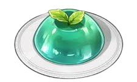

Назад

Мятное желе из игры "Genshin Impact"
Ингредиенты:
- Мята сушёная — треть кружки
- Вода — 400 мл – 2 г
- Сахар — 3-4 чайных ложки
- Агар-агар — 10 г
- Листик свежей мяты — опционально для декора
Агар-агар можно заменить желатином, но тогда готовое желе будет таять в тепле. Количество ингредиентов приведено по инструкции на агар-агаре автора, там 1 пакетик (10 г) расходуется на 400 мл жидкости.
Способ приготовления:
- Заварите мяту в закрытой ёмкости. Дайте настояться около 20 минут.
- Процедите этот чай в кастрюльку / ковшик, чтобы листья не попали. Добавьте сахар и тщательно перемешайте.
- Поставьте чай на средний огонь. Всыпьте агар-агар, количество определите по инструкции на упаковке. Тщательно перемешайте и доведите до кипения. Кипятите 2-5 минут, согласно инструкции на упаковке агар-агара. Не забывайте помешивать.
- Залейте смесь в форму. Дайте остыть до комнатной температуры и уберите в криоящик на несколько часов.
- Достаньте желе из формы. Положите на тарелку и украсьте листиком мяты.